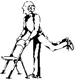
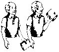
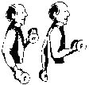

Exercise builds strong bones and slows the progress of osteoporosis. It also tones your muscles and helps you move about more easily by keeping joints, tendons and ligaments more flexible.
You should engage in weightbearing exercises, such as walking (considered one of the best methods of maintaining bone strength), jogging, hiking, climbing stairs, dancing, and weight training.
It is important to tailor your exercise program to fit your own level of ability and special needs. Most older people, even those 85 years and over and people with illnesses or disabilities, can take part in moderate exercise programs.
Preparing the body for exercise is important for persons at any age and all fitness levels. Before doing any of these exercises, it is suggested that you warm-up. A warm-up period should begin with slow, rhythmic activity such as walking. Gradually increase the intensity until your pulse rate, respiration rate and body temperature are elevated. It also is advisable to do some easy stretching exercises before moving on to these activities.
Here are some exercises developed by the President's Council on Physical Fitness and Sports. The exercises are arranged in three levels of difficulty. Once you have successfully completed all the exercises in Level 1, proceed to the next level. Remember, it may take several months to attain the minimal levels of physical fitness identified in Level 1 activities. Some will take less time, others more.
Remember before beginning any exercise program, you should discuss the program with your doctor and follow the doctor's advice.
Shoulder Shrug
 Lift shoulders way up, then relax them. |
Sitting Single Leg Raises
Sit erect, hands on side of chair seat for balance, legs extended at angle to floor. Raise left leg waist high. Return to starting position. |
Knee Lift
Stand erect. Raise left knee to chest or as far upward as possible. Return to starting position. |
Leg Extensions
Sit upright. Lift left leg off the floor and extend it fully. Lower it very slowly. |
Back Leg Swing
 To firm buttocks and strengthen the lower back.
Stand erect behind chair, feet together, hands on chair back for support. Lift one leg back and up as far as possible keeping knee straight. Return to starting position. |
Quarter Squat
Stand erect behind a chair, hands on chair for balance. Bend knees, then rise to an upright position. |
Arm Curl
 To strengthen arm muscles.
Use a weighted object such as a book or can of vegetables (not more than five pounds). Stand or sit erect with arms at sides, holding weighted object. Bend your arm, raising the weight. Lower it. (Can be done seated.) |
Modified Knee Push-Up
Start on bent knees, hands on floor under and slightly forward of shoulders. Lower body until chin touches the floor. Return to start. |
Side Lying Leg Lift
Lie on right side, legs extended. Raise left leg as high as possible. Lower to starting position. |
Alternate Leg Lunges
Take a comfortable stance with hands on hips. Step forward 18" to 24" with right leg, while extending arms straight ahead. Keep left heel on floor. Shove off right leg and resume standing position. |
(In Level 3 strength exercises, lightweight resistance equipment, such as a dumbbell, is used. If you do not have a dumbbell available, a number of substitutes can be used. These include a bucket of soil or a heavy household item such as an iron, can of food, stone or brick.)
Seated Alternate Dumbbell Curls
 To strengthen biceps of upper arms.
Sit comfortably on a flat bench with arms at sides. Hold a pair of dumbbells with an underhand grip, so that palms face up. Bending left elbow, raise dumbbell until left arm is fully flexed. Lower left dumbbell while raising right dumbbell from the elbow until right arm is fully flexed. Breathe normally. |
Alternate Dumbbell Shrug
Stand comfortably with dumbbells in each hand. Elevate shoulders as high as possible, rolling them first backward and then down to the starting position. On the second repetition, roll the shoulders forward and down. Alternate first backward and then forward. Exhale as you lower the shoulders. |
Dumbbell Calf Raise
Stand with feet shoulder-width apart, weights in each hand. Raise up on toes lifting heels as high as possible. Slowly lower heels to starting position. Breathe normally. |
Dumbbell Half Squats
Stand with feet shoulder-width apart and heels on a 2' x 4' block (not necessary, but preferred). Holding weights in each hand, slowly descend to a comfortable position where the tops of the thighs are about at a 45 degree angle to the floor. Inhale on the way down. Ascend to the upright position with knees slightly bent. Exhale on the way up. |
WalkingA weightbearing exercise, such as brisk walking, is one of the best all-around activities for you. It helps improve the flow of blood to the heart and strengthens the leg muscles. Choose a comfortable time of day to walk, not too soon after eating or when the air temperature is too high. Start walking 1/4 mile each day the first two weeks, 1/2 mile each day the third week, 3/4 mile the fourth week and 1 mile the fifth week. Start walking five days a week with a target of one mile each day the sixth week. Be careful not to overexert. Stop if you find yourself panting, feeling nauseous, if your breathing does not return to normal within 10 minutes after exercising or if your sleep is affected. |
Source: "Pep Up Your Life, A Fitness Book for Seniors," President's Council on Physical Fitness and Sports. Copyright 1991 American Association of Retired Persons. Reprinted with permission.